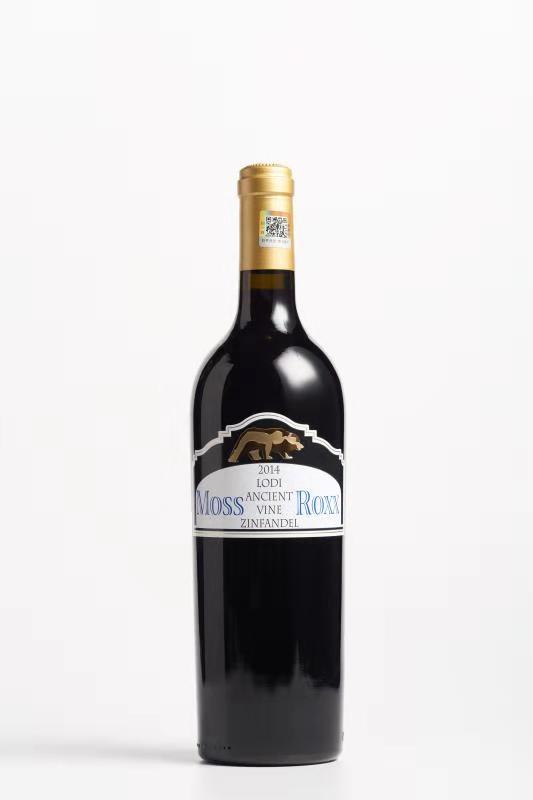
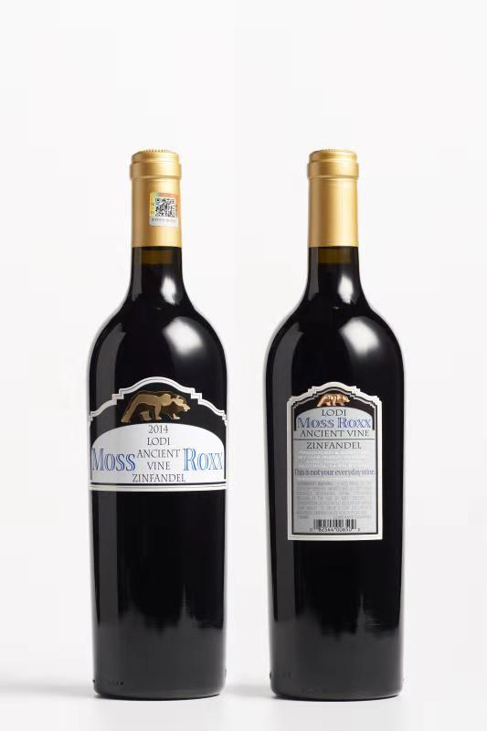
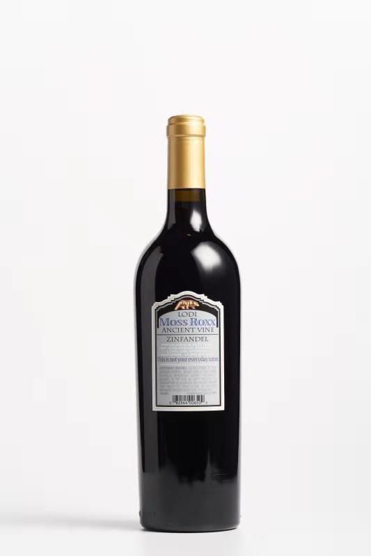

品名：金雄干红葡萄酒（Moss Roxx Ancient vine Zinfandel 2014)



加州金熊古藤仙芬黛干红葡萄酒
（Moss Roxx Ancient vine Zinfandel 2014）介绍
产地：美国（美国驻广州领事馆用酒）
产区：加州洛迪（Lodi）
产品类型：干红
规格：750毫升
葡萄品种：仙芬黛（Zinfandel）
葡萄树龄：50-120年之间
酒精度：14.5%
橡木桶陈酿：18个月
色泽：深红宝石色
香味：浓郁的覆盆子浆和香草的香气
口感：口感甜美，入口感觉有巧克力的香味，以及香料的味道，酒体强劲饱满，单宁细腻柔顺，平衡性佳，余味悠长。
最佳饮用温度：15-18℃
醒酒时间：饮用前醒酒30分钟
酒庄介绍
豪客庄园（Oak Ridge Winery）美国第二大葡萄酒庄园，葡萄园种植面积超过10万亩，种植了仙芬黛、赤霞珠、梅乐、霞多丽等葡萄品种，部份古藤仙芬黛树龄长达120年，产量极少，所酿出的葡萄酒香气浓郁且丰富。
获奖情况
2016年“休斯敦牛仔节”大金奖（Double Gold Houston Livestock/Rodeo Wine Competition 2016，Class Champino）;
2016年“五十最佳”加州仙芬黛评选赛金奖（Gold The Fifty Best-2016 CA Zinfandel）;
2015年奥兰治郡博览会葡萄酒大赛金奖（Gold Orange County Fair Wine Competition 2015）;
2015年洛迪消费者葡萄酒大赛银奖（Wilver Lodi Consumer Wine Awards 2015）;
2015年“评论家的挑战”国际葡萄酒大赛银奖（Silver Critic,s Challenge International Wine Competition 2015）;
2015年加利福尼亚州博览会葡萄酒大赛银奖（Silver California State Fair Wine Competition 2015）;
2015年日落国际葡萄酒大赛银奖（Sliver Sunset International Wine Competition 2015）;
2015年纽约国际葡萄酒大赛银奖（Silver New York International Wine Competition Awards 2015）;
2015年TEXSOM国际葡萄酒大赛铜奖（Bronze TEXSOM International Wine Competition 2015）;
2012年广东国际酒类商品展销会银奖;
2012年度广东酒类市场受消费者欢迎产品。